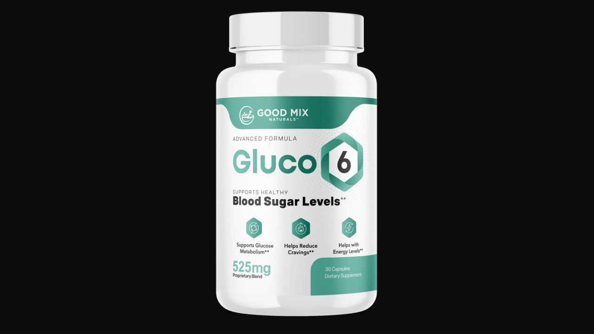

I analyzed the GLUT-4 formula, all 6 ingredients, and the Harvard-backed science behind Sukre. Here's what the research actually says — and what real users are experiencing.
▶ Watch our full Gluco6 video review before buying
Gluco6 addresses GLUT-4 receptor overload — a documented mechanism that explains why so many adults struggle with blood sugar and weight despite eating carefully. The combination of Sukre with Gymnema, Chromium, Cinnamon, Teacrine, and Green Tea Extract targets multiple aspects of glucose metabolism simultaneously. The clinical evidence on the supporting ingredients is solid, and user results are consistent. The 60-day guarantee makes it a reasonable risk-free trial for anyone dealing with unstable blood sugar or metabolic weight gain.
Gluco6 is a dietary supplement formulated to support healthy blood sugar levels and promote weight loss through a mechanism most blood sugar products overlook: GLUT-4 receptor optimization. It was developed by Dr. Leavitt and is manufactured in an FDA-registered, GMP-certified facility in the United States.
The formula contains 6 premium, bioavailable, plant-based ingredients. Each capsule is free from GMOs, soy, dairy, and stimulants. The recommended protocol is one capsule in the morning before breakfast — a simple, sustainable daily routine that works with the body's natural glucose processing cycle.

What makes Gluco6 stand out in the crowded blood sugar supplement market is the GLUT-4 mechanism. Most competing products use generic combinations of Berberine, Cinnamon, and Chromium with no unifying theory of action. Gluco6 builds around a specific, Harvard-researched mechanism — GLUT-4 receptor overload — and selects ingredients that address it from multiple angles. The inclusion of Sukre, specifically designed for GLUT-4 support, is a meaningful differentiator.
GLUT-4 receptors (Glucose Transporter Type 4) are specialized proteins embedded in muscle and fat cells. Their job is to transport glucose from the bloodstream into cells where it can be used for energy. When GLUT-4 receptors function properly, blood sugar remains stable, insulin is used efficiently, and the body burns glucose for fuel rather than storing it as fat.
The problem begins with hidden sugars. The modern food supply contains sugars in places most people don't expect: bread, pasta sauces, condiments, dressings, processed cereals, and flavored beverages. These hidden sugars create a constant glucose load on GLUT-4 receptors — essentially overworking them continuously. Over months and years, the receptors become less responsive — a condition analogous to insulin resistance at the cellular transport level.
When GLUT-4 receptors are overloaded and underperforming, the pancreas compensates by producing excessive insulin. This insulin flood promotes fat storage — particularly visceral abdominal fat — while failing to adequately clear glucose from the blood. The result is the combination most adults with metabolic issues recognize: high blood sugar, stubborn belly fat, energy crashes after meals, and relentless sweet cravings.
Harvard's latest research identified this GLUT-4 overload as a central driver of modern metabolic dysfunction. Gluco6 was specifically designed to address it — not by suppressing symptoms, but by restoring GLUT-4 receptor function.
Sukre is a proprietary healthy sugar compound that provides a clean, non-disruptive glucose signal to GLUT-4 receptors. Unlike dietary sugars that bombard receptors with high-intensity signals, Sukre delivers a gentle, receptor-appropriate signal that allows overloaded GLUT-4 receptors to reset and resume efficient function. According to the Gluco6 formulation, this is the only product specifically built around GLUT-4 receptor restoration — making Sukre a unique differentiator in blood sugar supplementation. Think of it as recalibrating the receptor's sensitivity rather than fighting against it.
Known in Ayurvedic medicine as "Gurmar" — literally "sugar destroyer" — Gymnema Sylvestre is one of the most researched herbs for blood sugar management. Its active compounds, gymnemic acids, temporarily block sweet taste receptors on the tongue, reducing the perceived appeal of sweet foods and directly suppressing sugar cravings. More importantly, Gymnema slows the absorption of glucose from the digestive tract into the bloodstream, reducing the magnitude of post-meal blood sugar spikes. Multiple clinical studies confirm Gymnema's ability to support healthy fasting blood glucose and A1C levels.
Chromium is an essential trace mineral that acts as a cofactor for insulin — meaning insulin cannot function efficiently without adequate chromium. Research shows that chromium deficiency (extremely common in the modern diet due to food processing) directly contributes to insulin resistance and blood sugar dysregulation. Supplementing with chromium improves the body's insulin sensitivity — helping cells respond more efficiently to insulin signals and process glucose more effectively. Gluco6 already provides a sufficient amount of chromium, so users should avoid combining it with other chromium-heavy supplements.
Cinnamon's blood sugar benefits come from an active compound called methylhydroxy chalcone polymer (MHCP), which mimics insulin and activates insulin receptor signaling pathways in cells. Multiple meta-analyses of randomized controlled trials confirm cinnamon supplementation produces significant reductions in fasting blood glucose and improvements in insulin sensitivity. In the context of Gluco6, cinnamon complements Sukre's GLUT-4 restoration by improving the downstream insulin signaling that follows glucose uptake.
Teacrine is a patented, naturally occurring compound structurally similar to caffeine but with distinct physiological properties. Unlike caffeine, Teacrine does not raise heart rate, does not cause jitteriness, and does not produce tolerance with regular use. It supports clean, sustained mental and physical energy by influencing adenosine receptors — the same receptors responsible for fatigue signaling. Users consistently describe the energy from Gluco6 as smooth and steady rather than stimulant-like. This is the Teacrine effect — making it ideal for a morning supplement taken with or without coffee.
Green tea's primary bioactive compound for metabolic benefit is epigallocatechin gallate (EGCG) — a potent antioxidant that improves glucose metabolism at the cellular level. Research shows EGCG enhances insulin sensitivity in liver and muscle cells, supports fat oxidation, and activates AMPK — a cellular energy sensor often called the "metabolic master switch." In the context of Gluco6, Green Tea Extract amplifies the metabolic improvements initiated by Sukre and Chromium, extending their effects to include thermogenic fat burning alongside blood sugar stabilization.
Gymnema Sylvestre and Teacrine begin working quickly. Most users notice reduced sweet cravings and a more even energy curve during the day — fewer post-meal crashes, less mid-afternoon fatigue. The compulsive drive to snack between meals begins to diminish.
Sukre's GLUT-4 receptor restoration and Chromium's insulin sensitization are now producing measurable effects. Post-meal blood sugar spikes flatten. Fasting blood glucose readings often begin improving. The anxiety around eating — particularly for those who monitor glucose — starts to reduce.
With blood sugar stabilized and insulin functioning efficiently, the body stops preferentially storing excess glucose as fat. Users in this phase commonly report 10-20 lbs of weight loss — particularly visceral belly fat — alongside continued blood sugar improvements. A1C markers frequently improve for users monitoring them.
Dr. Leavitt recommends 3-6 months for maximum results. At this stage, GLUT-4 receptor function is substantially restored, metabolic rate has improved, and blood sugar management feels sustainable rather than effortful. Most users in this phase report that healthy eating becomes easier — the compulsive relationship with sugar has fundamentally changed.
"Gluco6 has given me my life back. I was tired of the constant blood sugar monitoring and the fear of what would happen if I didn't manage it perfectly. With Gluco6, I've seen remarkable improvements in my readings, and I no longer feel like my blood sugar controls me. I've lost 20 pounds and feel fitter than I did in my 30s."
"I've been struggling with weight gain and high blood sugar for years. Ever since starting Gluco6, my life has changed. Not only has it helped me manage my blood sugar, but I've lost 15 pounds in two months. My energy is steady all day and the sweet cravings that used to control me are basically gone."
"Before Gluco6, I had food anxiety every time I ate out. I was constantly calculating carbs and worrying about blood sugar spikes. With Gluco6, I can finally relax and enjoy meals with friends and family knowing my blood sugar is better managed. Losing weight has never felt so achievable."
60-Day Guarantee · Made in USA · GMP Certified · 100% Plant-Based · Non-GMO
→ Visit Official Gluco6 Website96% of customers choose the 6-bottle package — consistent with Dr. Leavitt's recommendation of 3-6 months for maximum long-term metabolic results. The 6-bottle package also provides the best per-bottle value and includes free shipping and 2 bonus digital guides.
GMP Certified · Made in USA · 100% Plant-Based · 60-Day Money-Back Guarantee
→ Get Gluco6 at the Official PriceAffiliate Disclosure: This review contains affiliate links. If you purchase through our links, we may earn a commission at no additional cost to you. This does not influence our analysis. See our full Affiliate Disclosure. The statements on this page have not been evaluated by the FDA. This product is not intended to diagnose, treat, cure, or prevent any disease. Always consult your healthcare provider before starting any supplement.